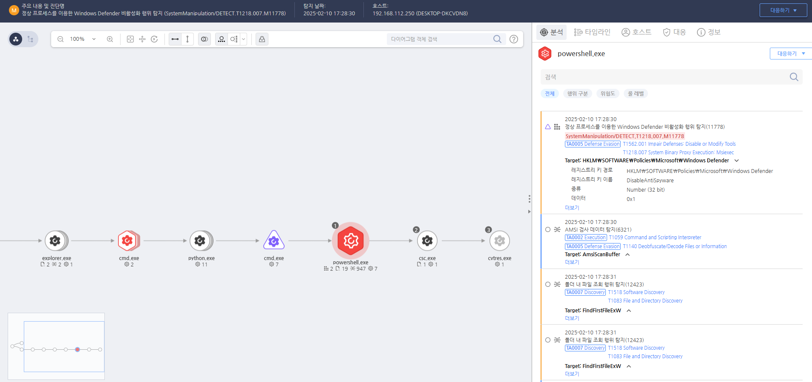

T1562.001.02 레지스트리 편집을 통한 디펜더 비활성화
D3FEND
MITRE ATT&CK 액션을 기준으로 대응 방안을 작성
Detection
레지스트리 DisableAntiSpyware의 값을 변조하는 행위를 확인합니다.
Detection(EDR)

https://172.18.10.125:8903/#/analysis/alert/67a9baa3002dc6cc00000a57
Response
공격자가 변경한 보안 설정을 원래대로 복원합니다.
Mitigations
1. 보안 도구의 무결성 보호
- 보안 도구의 무결성 검사를 활성화하여 소프트웨어가 변경되거나 비활성화되지 않도록 모니터링합니다.
- 보안 도구와 운영 체제 간의 통합을 강화하여, 보안 도구가 중단되거나 수정되지 않도록 시스템의 설정을 보호합니다.
- 보안 도구 업데이트 및 패치 관리를 정기적으로 수행하여 최신 버전이 항상 실행되도록 합니다.
2. 관리자 권한 제한 및 최소 권한 원칙 적용
- 관리자 권한을 최소화하여 공격자가 보안 도구를 비활성화하거나 수정할 수 없도록 합니다.
- 시스템 및 네트워크의 관리자는 최소 권한 원칙(Least Privilege) 을 적용하여, 오직 필요할 때만 권한을 상승시킬 수 있도록 합니다.
- 보안 도구와 관련된 계정에 대한 강력한 인증 방법을 사용하고, 비밀번호 복잡성 및 주기적인 변경을 요구합니다.
3. 실시간 모니터링 및 이상 탐지
- SIEM(Security Information and Event Management) 시스템을 사용하여 보안 도구의 비활성화 시도나 설정 변경을 실시간으로 모니터링합니다.
- 보안 도구의 비정상적인 종료나 수정, 비정상적인 파일 활동을 탐지하여 경고를 발송하고, 즉시 대응할 수 있도록 합니다.
- 로그 관리를 통해 보안 도구 관련 이벤트를 기록하고, 이상 징후를 분석하여 빠르게 대응합니다.
4. 보안 도구 및 시스템 복구 전략
- 보안 도구의 복원 전략을 수립하여 비활성화되거나 수정된 경우 신속하게 복구할 수 있도록 합니다.
- 시스템 이미지 백업 및 정기적인 복구 테스트를 통해 시스템 상태를 이전의 안전한 상태로 복원할 수 있도록 준비합니다.
- 변경 불가능한(immutable) 백업 시스템을 사용하여 공격자가 백업 데이터를 수정할 수 없도록 합니다.
5. 교육 및 인식 제고
- 보안 훈련을 통해 관리자 및 사용자가 보안 도구의 중요성에 대해 인식하고, 도구가 수정되지 않도록 주의하도록 교육합니다.
- 정기적인 보안 인식 교육을 통해 사용자가 의심스러운 활동이나 보안 도구의 비활성화를 인지하고 대응할 수 있도록 합니다.
Affected Techniques
Action 실행시 함께 영향을 받는 다른 Techniqes
| D3FEND |
| D3-RKD Registry Key Deletion |